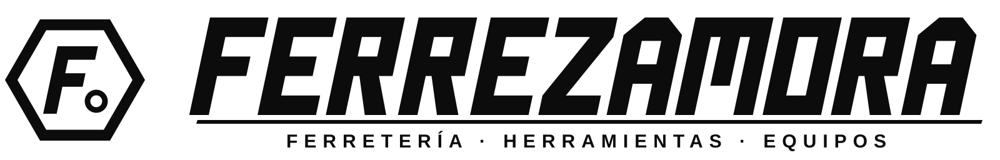

FerreZamora
Un logo con el mismo carácter de los afiches de la tienda: negro de taller, amarillo herramienta y una franja roja. Funciona grande en un letrero y pequeño como foto de perfil.
La tuerca
El ícono es una tuerca hexagonal, la pieza más reconocible de una ferretería. Repite la forma del sello de garantía de los afiches.
La F
La F en bloque inclinado da la idea de fuerza y movimiento. El orificio rojo recuerda una arandela y conecta con el logo anterior.
Las letras
Letras de bloque inclinadas, dibujadas a la medida. FERRE en blanco y ZAMORA en amarillo para que el apellido resalte.
Versiones
Principal · fondo oscuro
Fondo claro
Una tinta

Ícono
Colores
Negro taller#0C0C0C
Amarillo herramienta#FFD000
Rojo marca#E3161B
Blanco#FFFFFF
Así se ve en uso
ferrezamora94FerreZamora · Ferretería en BogotáCalle 11 #15-59a
64 pxCalle 11 #15-59a · Bogotá
WhatsApp 301 657 4285
@ferrezamora94
WhatsApp 301 657 4285
@ferrezamora94
Archivos
ferrezamora-logo.svg · logo principal para fondos oscurosferrezamora-logo-fondo-claro.svg · para fondos blancos o clarosferrezamora-logo-una-tinta.svg · un solo color: sellos, facturas, bordadosferrezamora-icono.svg · foto de perfil, ícono de la web, stickers